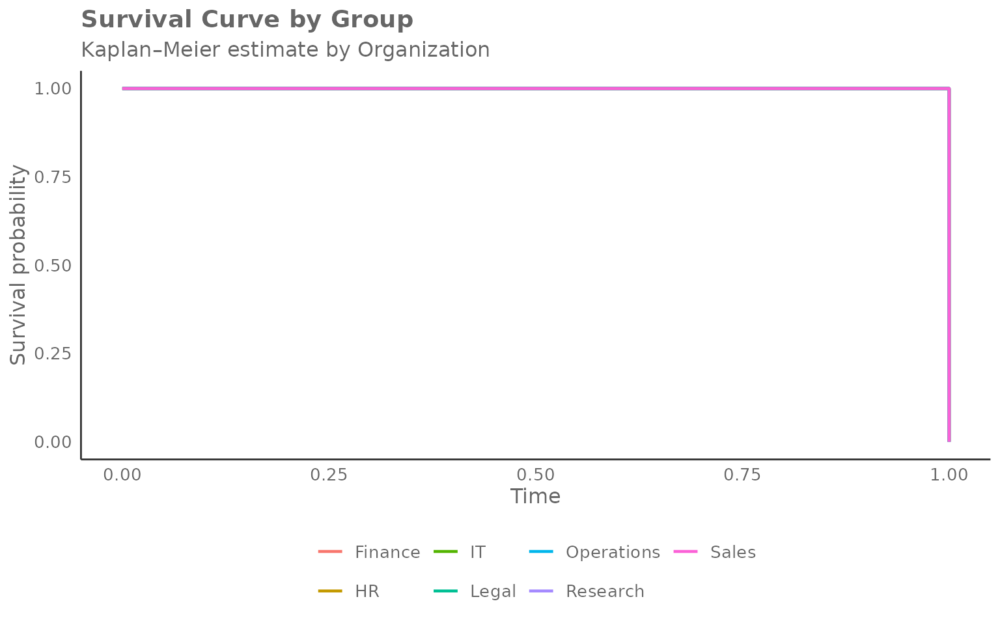
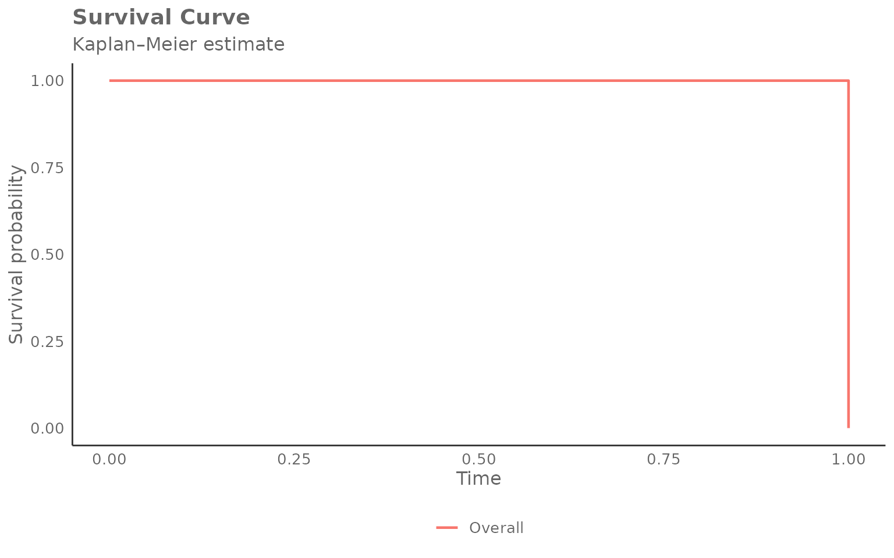
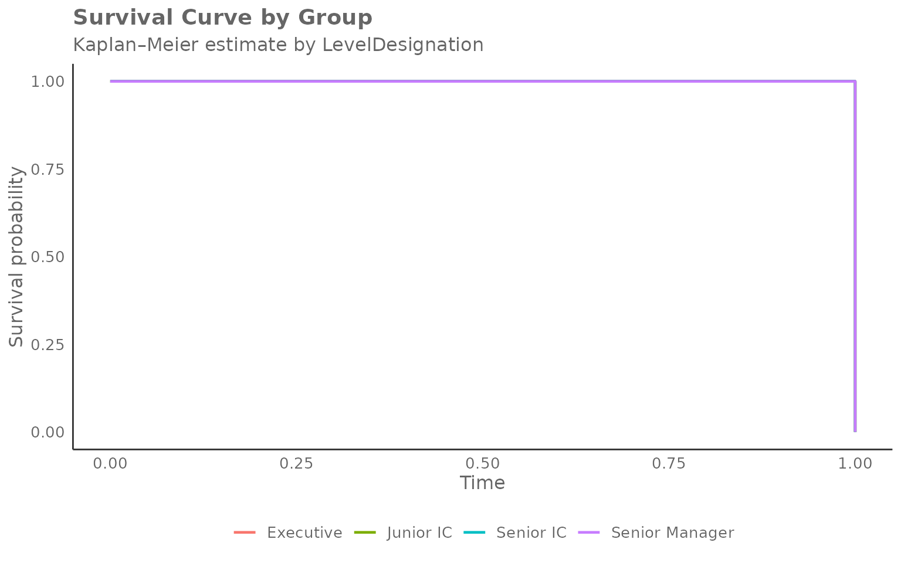
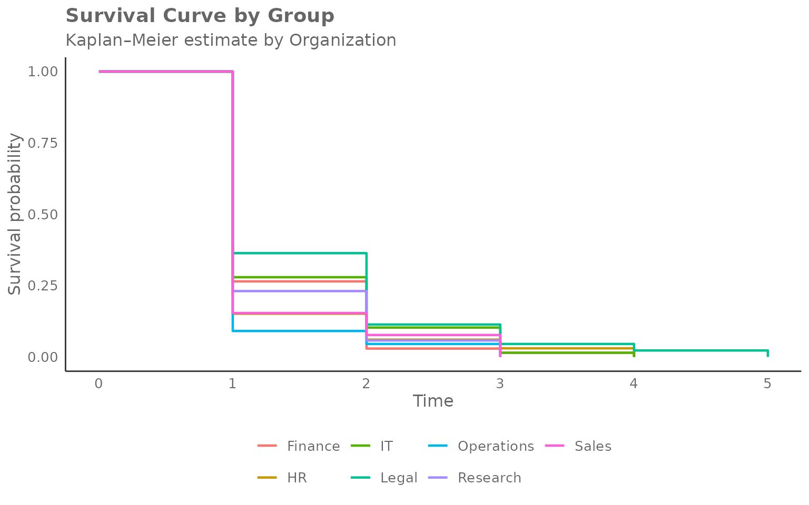
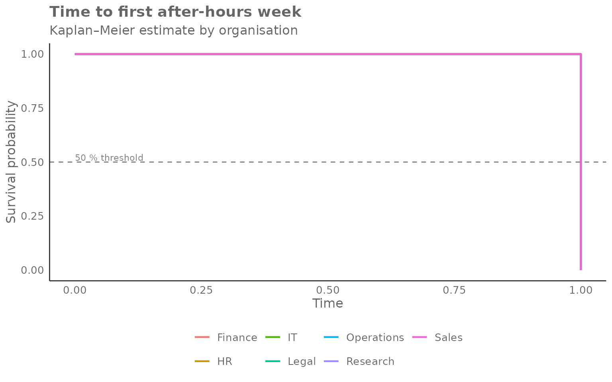

Survival Curves with create_survival()
vivainsights
2026-04-24
Source:vignettes/survival-curves.Rmd
survival-curves.RmdOverview
create_survival() produces a Kaplan–Meier
survival curve — a non-parametric estimate of how quickly a
specific event occurs across a population. In a workforce analytics
context typical events include:
- First week of after-hours collaboration
- First week a collaboration or network metric crosses a threshold
- First observed use of a new tool
The function expects one row per person with a
pre-computed time (weeks until event or end of observation)
and event (1 = event occurred, 0 = censored) column. Use
create_survival_prep() to derive these from a Standard
Person Query panel dataset.
Reframing “survival” for workforce contexts
In classical survival analysis the event is typically something negative — death, equipment failure — and the y-axis probability represents “still alive / still working”. In workforce analytics the event is usually a positive milestone: first adoption of a tool, first week as a power user, first time a network or collaboration metric crosses a meaningful threshold.
The terminology inverts: “surviving” means not yet having reached the milestone, and the event (“death”) means success — the person converted. It can therefore be more intuitive to read the chart as a time-to-adoption curve, a conversion curve, or a graduation curve:
- A curve that drops steeply early → most people reached the milestone quickly.
- A curve that stays high → many people had not yet converted by the end of the observation window.
- The y-axis → the share of people who have not yet experienced the milestone.
The curve answers: “By week N, what fraction of the population had not yet crossed the threshold?”
Step 1 — Prepare person-level survival data
pq_data is a panel dataset with one row per person per
week. create_survival_prep() collapses it to one row per
person, recording:
-
time: the week number at which the event first occurred, or the total number of observed weeks if the event never occurred (censored). -
event: 1 if the condition was met in at least one week, 0 otherwise.
Here we define the event as a person’s first week with any
after-hours collaboration
(After_hours_collaboration_hours > 0):
surv_data <- create_survival_prep(
data = pq_data,
metric = "After_hours_collaboration_hours",
event_condition = function(x) x > 0,
hrvar = "Organization"
)
glimpse(surv_data)
#> Rows: 300
#> Columns: 4
#> $ PersonId <chr> "0023c8ce-6939-4188-a9ec-f5c205fc4426", "00a79c9a-639e-42…
#> $ time <dbl> 1, 1, 1, 1, 1, 1, 1, 1, 1, 1, 1, 1, 1, 1, 1, 1, 1, 1, 1, …
#> $ event <int> 1, 1, 1, 1, 1, 1, 1, 1, 1, 1, 1, 1, 1, 1, 1, 1, 1, 1, 1, …
#> $ Organization <chr> "Legal", "Finance", "Finance", "Finance", "Research", "Fi…
# Event rate and time distribution
cat("Total persons: ", nrow(surv_data), "\n")
#> Total persons: 300
cat("Event rate: ", round(mean(surv_data$event) * 100, 1), "%\n")
#> Event rate: 100 %
cat("Weeks observed: ", range(surv_data$time), "\n")
#> Weeks observed: 1 1
surv_data %>%
count(event, name = "n") %>%
mutate(pct = round(100 * n / sum(n), 1),
label = ifelse(event == 1, "Had event", "Censored"))
#> # A tibble: 1 × 4
#> event n pct label
#> <int> <int> <dbl> <chr>
#> 1 1 300 100 Had eventThe persons who never had any after-hours work during the observation
window appear as censored (event = 0). The survival curve
accounts for this: they contribute information up to their last observed
week.
Step 2 — Plot the Kaplan–Meier curve
Pass the person-level data to create_survival(),
specifying the time and event columns and the grouping variable:
create_survival(
data = surv_data,
time_col = "time",
event_col = "event",
hrvar = "Organization",
mingroup = 5
)
Reading the chart:
- Y-axis — probability of not yet having reached the milestone (the “survival” probability, or equivalently, the share yet to convert).
- X-axis — week number (time since the start of observation).
- Each step down marks one or more conversions (events) in that group at that week.
- Curves that drop quickly indicate groups where most people reached the milestone early (fast adoption).
- Curves that stay high indicate groups where many people had not yet converted by the end of the window (slow or incomplete adoption).
Overall curve (no grouping)
Set hrvar = NULL to estimate a single curve across the
whole population:
create_survival(
data = surv_data,
time_col = "time",
event_col = "event",
hrvar = NULL,
mingroup = 5
)
Returning the survival table
Set return = "table" to get the underlying long-format
data frame. Each row represents one event time within one group:
surv_tbl <- create_survival(
data = surv_data,
time_col = "time",
event_col = "event",
hrvar = "Organization",
mingroup = 5,
return = "table"
)
head(surv_tbl, 12)
#> Organization n time survival at_risk events
#> 1 Finance 68 0 1 68 0
#> 2 Finance 68 1 0 68 68
#> 3 HR 33 0 1 33 0
#> 4 HR 33 1 0 33 33
#> 5 IT 68 0 1 68 0
#> 6 IT 68 1 0 68 68
#> 7 Legal 44 0 1 44 0
#> 8 Legal 44 1 0 44 44
#> 9 Operations 22 0 1 22 0
#> 10 Operations 22 1 0 22 22
#> 11 Research 52 0 1 52 0
#> 12 Research 52 1 0 52 52Columns:
| Column | Description |
|---|---|
Organization |
Group identifier |
n |
Total persons in group (after privacy filtering) |
time |
Week number |
survival |
Estimated survival probability at that time |
at_risk |
Persons still in the risk set (event not yet occurred) |
events |
Events occurring at this time point |
Extracting median event times
The median survival time is the week at which 50 % of the group has experienced the event:
surv_tbl %>%
group_by(Organization) %>%
filter(survival <= 0.5) %>%
slice(1) %>% # first time survival crosses 0.5
ungroup() %>%
select(Organization, n, time, survival) %>%
arrange(time)
#> # A tibble: 7 × 4
#> Organization n time survival
#> <chr> <int> <dbl> <dbl>
#> 1 Finance 68 1 0
#> 2 HR 33 1 0
#> 3 IT 68 1 0
#> 4 Legal 44 1 0
#> 5 Operations 22 1 0
#> 6 Research 52 1 0
#> 7 Sales 13 1 0Groups with a smaller time value here reach the event
threshold faster on average.
Grouping by a different HR variable
Any character column can be used as the grouping variable. Here we
compare after-hours adoption by LevelDesignation:
surv_level <- create_survival_prep(
data = pq_data,
metric = "After_hours_collaboration_hours",
event_condition = function(x) x > 0,
hrvar = "LevelDesignation"
)
create_survival(
data = surv_level,
time_col = "time",
event_col = "event",
hrvar = "LevelDesignation",
mingroup = 5
)
Changing the event definition
The event_condition argument in
create_survival_prep() accepts any function that returns a
logical vector. This makes it easy to explore different thresholds
without modifying your data.
Higher after-hours threshold
# Event: first week with more than 2 hours of after-hours collaboration
surv_high <- create_survival_prep(
data = pq_data,
metric = "After_hours_collaboration_hours",
event_condition = function(x) x > 2,
hrvar = "Organization"
)
cat("Event rate (> 2 h after-hours):", round(mean(surv_high$event) * 100, 1), "%\n")
#> Event rate (> 2 h after-hours): 100 %
create_survival(
data = surv_high,
time_col = "time",
event_col = "event",
hrvar = "Organization",
mingroup = 5
)
Network growth milestone
# Event: first week where internal network size exceeds 10 contacts
surv_net <- create_survival_prep(
data = pq_data,
metric = "Internal_network_size",
event_condition = function(x) x > 10,
hrvar = "Organization"
)
cat("Event rate (network > 10):", round(mean(surv_net$event) * 100, 1), "%\n")
#> Event rate (network > 10): 100 %
create_survival(
data = surv_net,
time_col = "time",
event_col = "event",
hrvar = "Organization",
mingroup = 5
)
Privacy filtering
Groups below mingroup unique persons are removed before
the curve is estimated. Increase the threshold to be more
conservative:
surv_strict <- create_survival(
data = surv_data,
time_col = "time",
event_col = "event",
hrvar = "Organization",
mingroup = 20,
return = "table"
)
# Which groups remained after stricter filtering?
surv_strict %>%
distinct(Organization, n) %>%
arrange(desc(n))
#> Organization n
#> 1 Finance 68
#> 2 IT 68
#> 3 Research 52
#> 4 Legal 44
#> 5 HR 33
#> 6 Operations 22Handling missing values
na.rm = TRUE (the default) drops rows where
time_col or event_col are NA
before the curve is estimated. Set na.rm = FALSE to keep
them; any remaining NA values will be silently excluded
during coercion and a warning will be issued.
Using the lower-level helpers directly
Like create_radar(), the survival family exposes its
building blocks as exported functions:
-
create_survival_calc()— accepts person-level data and returns a list with$table(the long survival table) and$counts(group size table). -
create_survival_viz()— accepts the$tableoutput and returns aggplotobject.
library(ggplot2)
calc <- create_survival_calc(
data = surv_data,
time_col = "time",
event_col = "event",
hrvar = "Organization",
mingroup = 5
)
# Inspect group sizes
calc$counts
#> # A tibble: 7 × 2
#> Organization n
#> <chr> <int>
#> 1 Finance 68
#> 2 HR 33
#> 3 IT 68
#> 4 Legal 44
#> 5 Operations 22
#> 6 Research 52
#> 7 Sales 13
# Render with extra annotation
create_survival_viz(
data = calc$table,
hrvar = "Organization",
title = "Time to first after-hours week",
subtitle = "Kaplan\u2013Meier estimate by organisation"
) +
geom_hline(yintercept = 0.5, linetype = "dashed", colour = "grey50") +
annotate("text", x = 0, y = 0.52, label = "50 % threshold",
hjust = 0, size = 3, colour = "grey50")
The dashed line at 0.5 makes it easy to read off the median time-to-event for each group.